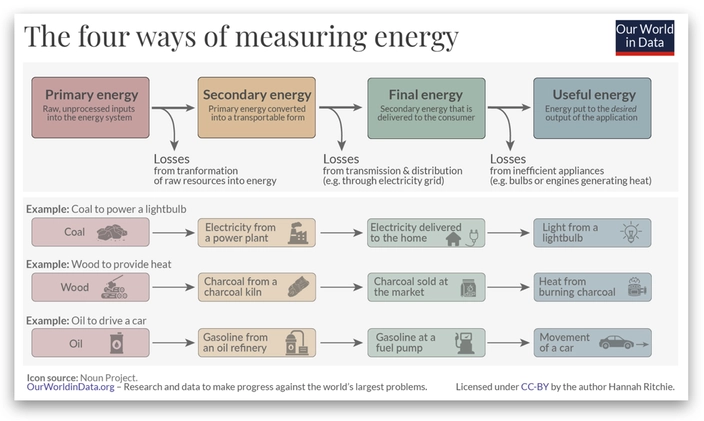
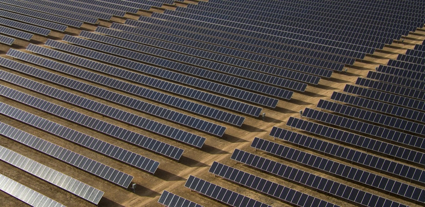

ON SOURCE: WE DON'T HAVE TIME
Big Solar is already outperforming Big Oil – learn how
Solar companies you might never have heard of is now providing the world with more useful energy than the oil giants often referred to as Big Oil.
Exxon Mobil, BP, TotalEnergies, Shell, and Chevron are familiar company names to most people around the world. But have you heard of Tongwei Co., GCL Technology Holdings Ltd., Xinte Energy Co., Longi Green Energy Technology Co., Trina Solar Co., JA Solar Technology Co., and Jinko Solar Co.?
Soon enough, these solar companies might be household names as well.
Bloomberg has calculated that the seven biggest solar companies are now providing the world with more useful energy than all of the Big Oil (ExxonMobil, Chevron, Shell, BP, Eni and TotalEnergies) combined.
At first glance, this might seem strange, considering that fossil fuels still make up almost 80 percent of the world's energy supply and around 60 percent of all electricity production.
But that number refers to primary energy, which is energy as it is available as resources—such as the fuels burnt in power plants—before it has been transformed. It relates to coal before it has been burned, or barrels of oil.
Photo by Maria Lupan on Unsplash
This is the most widely available statistic and very commonly used. The problem is that much of this energy can never be used by anybody. Around two-thirds of the primary energy goes to waste. In thermal power plants – which convert fossil fuels, biomass or nuclear into electricity, up to two-thirds of the primary energy is wasted as heat. For every three units of energy we put in, you get just one unit of electricity out. The same goes for cars with combustion engines. These engines can only transfer 30% of the input energy to move the car, while 70% is wasted as heat and noise.
What Bloomberg does is compare the amount of Useful energy delivered by Big Oil versus Big Solar. Useful energy is the energy that goes towards the desired output of the end-use application. For a lightbulb, it’s the amount of light that is produced. For a car, it’s the amount of kinetic (movement) energy that is produced.
What Bloomberg does is compare the amount of Useful energy delivered by Big Oil versus Big Solar. Useful energy is the energy that goes towards the desired output of the end-use application. For a lightbulb, it’s the amount of light that is produced. For a car, it’s the amount of kinetic (movement) energy that is produced.

Graph from Our World in Data
Oil companies' production can be measured in exajoules, a unit of energy. An exajoule of electricity would be able to power Australia or Italy for a year. According to Bloomberg, ExxonMobil produces about 8.3 exajoules of energy annually, while Shell produces 6.2 exajoules. However, much of this energy is lost as heat and noise, so on average, only about a quarter of it is actually used.
Solar companies like Tongwei and Longi also produce significant energy. They measure their production in metric tons of polysilicon, which is used to make solar panels. When converted to exajoules, their energy output is impressive and can rival big oil companies like BP, Eni, and ConocoPhillips.

Photo by American Public Power Association
For instance, if Tongwei goes ahead with its plan to build a huge polysilicon plant, it could produce more energy than ExxonMobil. And when Bloomberg takes into account what each group of companies can produce without major additional investments — comparing the volumes in oil firms' geological reserves to what solar companies will be able to produce before depreciation wears out their plant — clean power moves clearly into the lead.
Moreover, solar panels continue to generate electricity for decades, unlike oil and gas, which are used up quickly. Solar panels often come with 25-year warranties, ensuring long-term clean energy production.
ABOUT BIG OIL
- Big Oil is a name sometimes used to describe the world's six or seven largest publicly traded and investor-owned oil and gas companies, also known as supermajors. The term, particularly in the United States, emphasizes their economic power and influence on politics. Big Oil is often associated with the fossil fuels lobby and also used to refer to the industry as a whole in a pejorative or derogatory manner.
- Sources conflict on the exact makeup of Big Oil today, though the companies which are most frequently mentioned as supermajors are ExxonMobil, Chevron, BP, Shell, Eni and TotalEnergies, with ConocoPhillips frequently being included as well prior to spinning off its downstream operations into Phillips 66.
- Big Oil previously referred to seven oil companies which formed the Consortium for Iran; such 'Seven Sisters' were the Anglo-Persian Oil Company (a predecessor of BP), Shell plc, three of Chevron's predecessors (Standard Oil of California, Gulf Oil and Texaco), and two of ExxonMobil's predecessors (Jersey Standard and Standard Oil of New York)
ON SOURCE: WE DON'T HAVE TIME